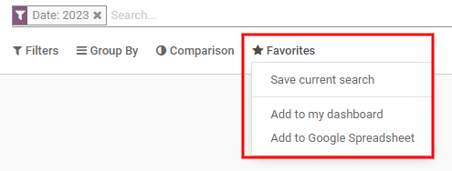
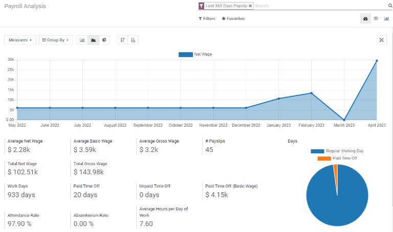
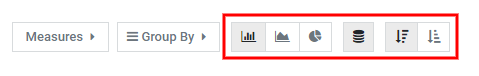
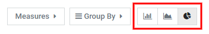
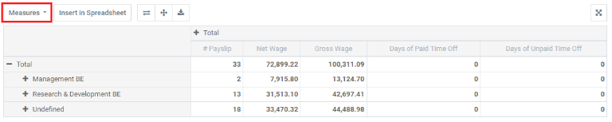
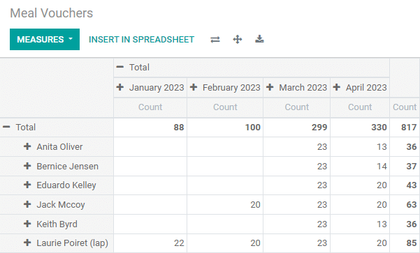
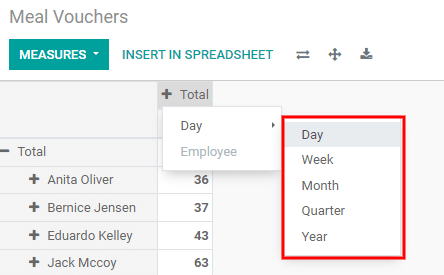
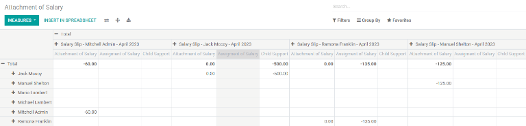
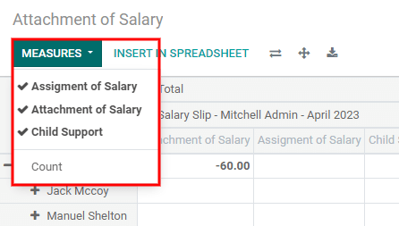

Reportes¶
La sección Reportes de la aplicación Nómina ofrece varios reportes de los que puede elegir. Los reportes Nómina, Vales de despensa, Deducción salarial y DMFA son generales y están disponibles para todas las empresas sin importar su ubicación. Los reportes Asignación de tiempo personal pagado, Formulario 273S y Formulario 274.XX solo están disponibles para empresas con sede en Bélgica.
Para visualizar un reporte vaya a y haga clic en uno en específico.

Si un reporte no está disponible para una empresa, aparecerá error con el mensaje Debe iniciar sesión en una empresa belga para utilizar esta función.
En la parte superior de cada reporte, haga clic en Filtros para mostrar los filtros opcionales para ese reporte en específico. Los filtros muestran información que coincide con los parámetros específicos del filtro. Por ejemplo, si selecciona el filtro Recibos de nómina de los últimos 365 días solo aparecerán los recibos correspondientes. Todos los reportes tienen la opción de agregar un filtro personalizado y cada uno tiene diferentes opciones predeterminadas. Seleccione los parámetros y luego haga clic en el botón Aplicar.

Al hacer clic en Favoritos aparecerán tres opciones: Guardar la búsqueda actual, Agregar la búsqueda al tablero o Insertar la búsqueda en una hoja de cálculo de Google.
Nómina¶
Haga clic en para visualizar el reporte Análisis de la nómina.
Este reporte muestra todos los recibos de nómina generados en los últimos 365 días y puede mostrar las métricas de varios parámetros. Haga clic en la casilla Medidas para ver un menú desplegable con las distintas opciones. Las opciones disponibles incluyen: Número de recibo, Salario básico, Salario básico por tiempo personal, Días de tiempo personal pagado, Días de ausencia imprevista, Días de tiempo personal sin pagar, Salario bruto, Salario neto, Número de días, Número de horas, Días laborables, Horas laborables y Número.

Gráfico de líneas¶
La vista predeterminada del análisis de nómina es un gráfico de líneas. Si seleccionó una vista diferente, haga clic en el icono gráfico de líneas (es el icono en el medio) ubicado en la barra de menú para cambiar la vista. Al final de las opciones aparece una opción para mostrar el gráfico de líneas en orden ascendente o descendente.

Gráfico de barras¶
Para mostrar los datos en un gráfico de barras haga clic en el icono gráfico de barras (es el primer icono) en la barra de menú.
Haga clic en el icono Apilado para ver el gráfico de barras en un formato apilado (es decir, aparecen varios valores en cada columna). Al final de las opciones aparece una opción para mostrar las columnas en orden ascendente o descendente.
Truco
Si hace clic en una opción la habilita. Para desactivarla, vuelva a hacer clic en ella. Cuando la opción está habilitada, aparece en gris y cuando está inactiva, aparece en blanco.
Gráfico circular¶
Para mostrar los datos en un gráfico circular, haga clic en el icono Gráfico circular (es el último icono) en la barra de menú. Esta vista no cuenta con opciones adicionales.
Tabla dinámica¶
La mitad inferior del tablero de análisis de nómina muestra una tabla dinámica, no importa el tipo de gráfico que haya seleccionado en la parte superior. La información predeterminada que aparece es el número de recibos de nómina, salario neto, salario bruto, días de tiempo personal pagado y días de tiempo personal sin pagar. La información está desglosada por departamento. Para que aparezca más información en el reporte, seleccione el menú desplegable Medidas y luego haga clic en cualquier otro elemento.
Para ordenar las entradas por una columna específica (por ejemplo, Salario neto) haga clic en el nombre de la columna dos veces. El primer clic selecciona la columna y el segundo clic ordena la información en orden descendente.

Haga clic en el icono Descargar xlsx para exportar los datos en formato .XLSX. La información se descargará en una hoja de cálculo de Excel.

Puede insertar los datos en una hoja de cálculo si hace clic en el botón Insertar en hoja de cálculo. Aparecerá una ventana emergente donde deberá decidir en qué hoja de cálculo colocar la información, seleccione una hoja que ya existe o proporcione el nombre para una nueva. Haga clic en el botón Confirmar para ir a una vista de hoja de cálculo con toda la información completada.

Desde la vista de la hoja de cálculo, haga clic en Archivo y luego seleccione Guardar para almacenar los datos o en Guardar como plantilla para guardar la configuración como una plantilla para usar después.
Nota
La aplicación Documentos debe estar instalada para poder utilizar la opción Insertar en hoja de cálculo.
Vales de despensa¶
Vales de despensa proporciona un resumen de los vales que utilizan los empleados y puede visualizar este reporte por día, semana, mes, trimestre o año. La vista predeterminada es por mes.
Haga clic en Total para cambiar la vista. Los datos se contraerán y solo aparecerá la columna con los números correspondientes. Vuelva a hacer clic en Total, luego pase el cursor sobre Día y haga clic en alguno de los otros periodos disponibles.
Tiene la posibilidad de comparar el reporte actual de vales de despensa con el del periodo o año anterior. Para ver estas comparaciones, haga clic en el menú desplegable Comparación ubicado en la parte superior, luego seleccione Fecha: Periodo anterior o Fecha: Año anterior.

Haga clic en el icono Descargar xlsx para exportar los datos en formato .XLSX. La información se descargará en una hoja de cálculo de Excel.

Puede insertar los datos en una hoja de cálculo si hace clic en el botón Insertar en hoja de cálculo. Aparecerá una ventana emergente donde deberá decidir en qué hoja de cálculo colocar la información, seleccione una hoja que ya existe o proporcione el nombre para una nueva. Haga clic en el botón Confirmar para ir a una vista de hoja de cálculo con toda la información completada.
Desde la vista de la hoja de cálculo, haga clic en Archivo y luego seleccione Guardar para almacenar los datos o en Guardar como plantilla para guardar la configuración como una plantilla para usar después.
Nota
La aplicación Documentos debe estar instalada para poder utilizar la opción Insertar en hoja de cálculo.
Embargos salariales¶
El reporte Deducción salarial muestra todas las deducciones o asignaciones por empleado, por ejemplo, los pagos de manutención infantil y embargos salariales.
Los empleados aparecen en la columna izquierda; las deducciones aparecen en la fila superior y están organizadas por mes.
Puede exportar el reporte como un archivo .xlsx o insertarlo en una hoja de cálculo con los botones correspondientes ubicados en la parte superior.
Al hacer clic en el botón Medidas aparecerán algunas opciones sobre cómo mostrar la información. Puede seleccionar o anular la selección de Asignación salarial, Deducción salarial, Pensión alimenticia y Número si hace clic en el elemento. Un elemento aparecerá si tiene una marca de verificación junto a su nombre.
Tiene la posibilidad de comparar el reporte de deducciones salariales con el del periodo o año anterior. Para ver estas comparaciones, haga clic en el menú desplegable Comparación ubicado en la parte superior, luego seleccione Fecha de finalización del recibo de nómina: Periodo anterior o Fecha de finalización del recibo de nómina: Año anterior.